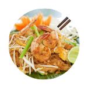

PAD THAI
Ingredients :
- 200 g peeled shrimp, leave heads and tails attached
- 100 g thinly sliced board tofu
- 50 g lightly smashed shallots
- 50 g minced garlic
- 50 g finely chopped preserved dried Chinese radish
- 50 g dried shrimp
- 2 eggs
- 200 g Pud Thai noodle
- 3 tbs. coarsely grounded roasted peanut
- 100 g bean sprout
- 50 g Chinese chive leaves, cut in 1 inch size
Seasoning :
- 2 tbs. sugar1
- ½ tbs. fish sauce
- ½ tbs. chili flake
- ½ - ¾ c. tamarind juice
Condiments :
- Bean sprout, Chinese chive and wedged limes